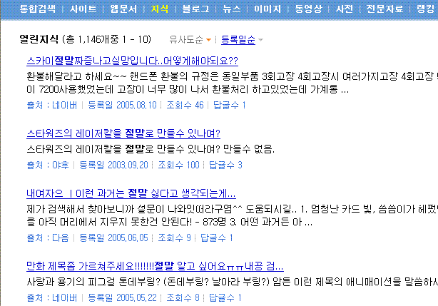

[절말이 대세다?]
참고 주소 1 [엠파스 검색 결과]: http://search.empas.com/search/ok.html?q=%C0%FD%B8%BB&qn=&r=A&m=T&f=A&w=286061&o=A&n=10&rv=0&sd=0&pt=7&mn=2&e=401
참고주소 2 [네이버 검색 결과]: http://websearch.naver.com/search.naver?where=webkr&query=%C0%FD%B8%BB&xc=&docid=&qt=df&lang=&f=all&r=&st=s&fd=1&start=901&display=10&domain=0&dftf=&qf=1&qvt=0
일단 참고 주소를 눌러보자.
혹시 '조낸' 같은게 아닐까?